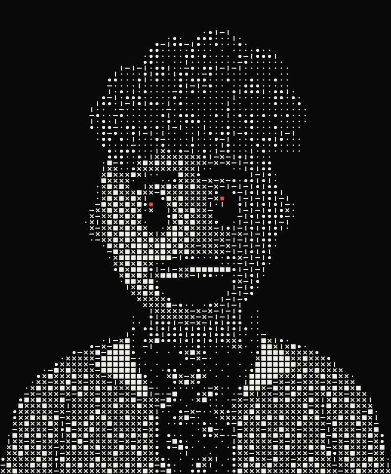
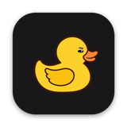
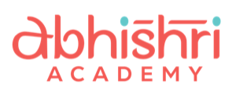

Sibhimanyu
Design / Engineering / AI
Building AI agents, tools, and experiments —
for classrooms, schools, farms, and everything in between.
Work
-

RasanAI
macOS · AI film
A Mac app that turns a sentence and your footage into a finished film. You make five calls; Claude directs the rest.
-

Flotilla
Web · multiplayer coding agents
Several AI coding agents build one app together, with tasks handed out, file ownership enforced and one live board.
-

Heresay
Web, iOS, macOS · user feedback
In-app bug reports that reach your coding agent once your team accepts them.
-

Squeak
macOS, iPhone · agent pager
Watches every Claude Code and Codex session on your Mac and pages you when one needs you.
Visit sitePrivate for now
-

Imago
Web · API explorer
Paste an API URL or a curl command and get a live interface drawn from the JSON's shape.
-

Greenroom
macOS · classroom setup
Starts a whole morning class in one click: OBS virtual camera, Zoom and a tiled layout.
-

Abhishri Academy
Web, iOS · school ERP
Attendance, fees and receipts for staff, an iOS app, and a portal for parents.
-
SNOF
Web · farm dashboard
Every room, sensor and switch on the farm, live from Home Assistant.
Visit sitePrivate repo